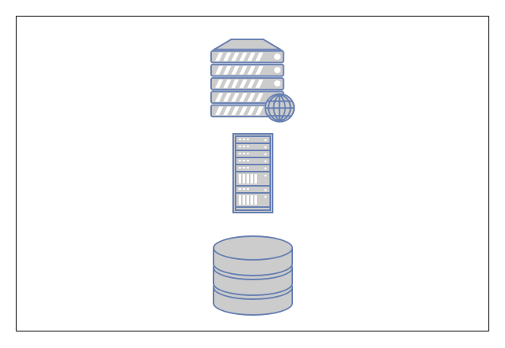
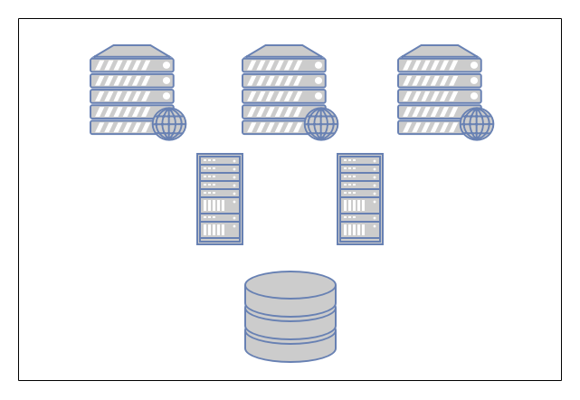
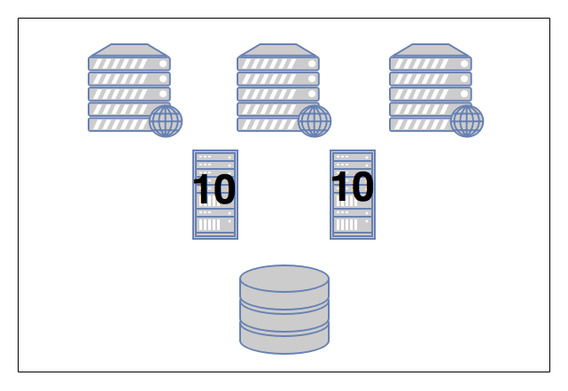

Monitoring: Finding your story
Lee Fox
About Lee
- Cloud Architect at Infor
- Agile, DevOps, and ChatOps advocate
- Past Technology Chair of Agile Austin
- Alexa and Google Home Developer
- Co-Author of Effective Gradle Implementation Video Series on Packt
- Trained Innovation Games Facilitator
- Amateur Chef
Who knows what S.E.T.I. is?
S.E.T.I.
- Search for Extraterrestrial Intelligence
- Began February 1, 1985
Huge Problem Set
- 1.0 * 10^24 stars in the universe
- Began February 1, 1985
Today's problems monitoring

- CPU, Memory, and Disk
- 3 metrics
Today's problems monitoring
- Three tiered systems
- 3 metrics * 3 tiers = 9 metrics
Today's problems monitoring
- We scaled!
- 3 metrics * 6 VMs = 18 metrics
Today's problems monitoring
- Added Docker containers
- 3 metrics * 24 Containers and VMs = 72 metrics
Today's problems monitoring
- Per hour: 1,728 Metrics
- 72 metrics * 24 hours
- Per minute: 103,680 Metrics
- 72 metrics * 24 hours * 60 minutes
- Per second: 6,220,800 Metrics
- 72 metrics * 24 hours * 60 minutes * 60 seconds
Today's problems monitoring
Today's problems monitoring
Some Vocabulary
- Monitoring
- Alerting
- Notifications
Monitoring
- Simply keeping a watch on your application or system
- Watching for metrics
- Watching for events
Alerting
- Sending some notification when a threshhold has been met.
- Can't have alerting without monitoring
Paging
- Actually notifying someone in person when an alert is generated
- Can't have paging without alerting
Break down the metrics
- Work Metrics
- Resource Metrics
- Events
Work metrics
- Throughput
- Errors
- Efficiency
Resource metrics
- CPU Utilization
- Memory Utilization
- Disk Space
Events
- Scale up/Scale down
- Login/Logout
- Software deployments
- Start of day/End of day
- Backup running
Find your story
Build a story
- Metrics convey meaning
- One thing at a time
- More details mean a richer story
- Draw meaning from your story
Developer metrics
- Your test coverage goes up
- Number of lines of code goes down
- Possible stories: Cruft removed. Duplication removed.
- Unlikely stories: People are adding unit tests.
Stories have perspective
- There are two sides to each story
- Find new perspective
Tooling
- Splunk, DataDog
- ELK, Graylog
- Log4J
- Jira, VersionOne, Rally
Source Links
- https://www.datadoghq.com/blog/monitoring-101-collecting-data/
Any questions?
I hope you have enjoyed the session!
Twitter: @FoxInATX
Email: lee.h.fox@gmail.com